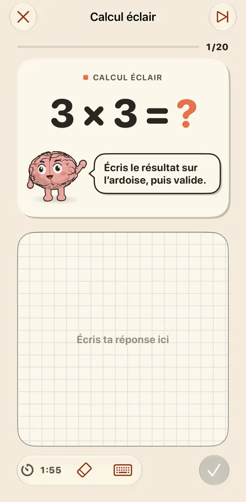
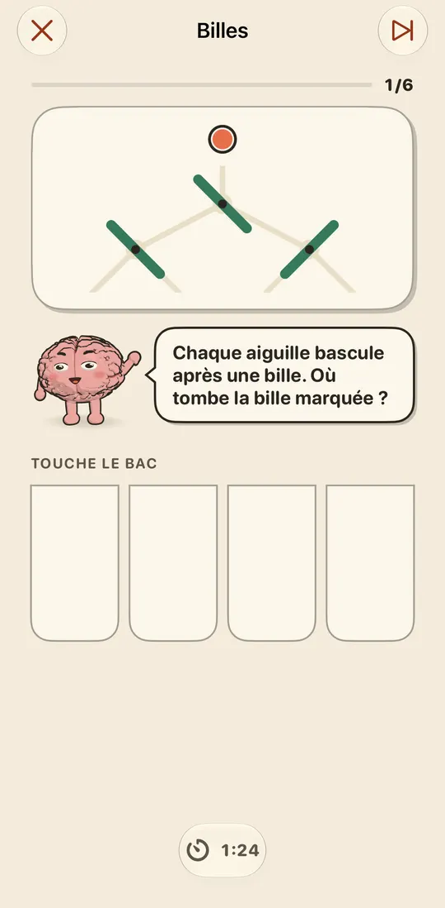
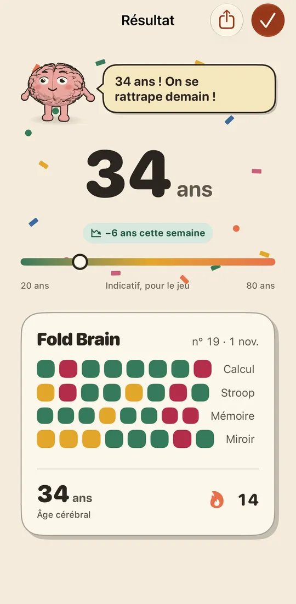

Calcul
Additions, soustractions, tables et divisions de plus en plus corsées, réponse écrite au doigt.
Huit exercices courts en quatre familles : calcul, attention, mémoire et espace. Chaque jour, un de chaque. Tu lis la consigne en haut, tu réponds au doigt en bas. Plio t'accompagne à chaque exercice.
Additions, soustractions, tables et divisions de plus en plus corsées, réponse écrite au doigt.
Touche la couleur de l'encre, pas le mot. Ou trie les formes pendant que la règle change.
Retiens une suite de chiffres et réécris-la. Ou suis une bille à travers des aiguilles qui basculent.
Recopie un motif en miroir de l'autre côté du pli, trouve la vue d'un tas de cubes, range des objets par poids.



Après chaque séance, ton âge cérébral montre ta progression. Un tampon marque chaque jour joué, un tampon doré chaque séance parfaite. Classements et réalisations Game Center, si tu le souhaites.
Ouvert : le jeu au-dessus du pli, l'ardoise en dessous. Plié à 90° et posé : l'écran du haut devient un tableau noir et Plio s'assoit sur le rebord. Fermé : tout tient sur l'écran externe.
Le jeu en haut de l'écran, l'ardoise en bas, au pouce. Sans pli, l'écran est simplement partagé en deux.
Le jeu à gauche, une grande ardoise à droite pour écrire au stylet.
Non. Fold Brain est complet sur tout iPhone et iPad : sans pli, l'écran se partage simplement en deux. Le Duo ajoute le mode pupitre et les jeux qui traversent le pli.
Oui. Les séances, l'écriture et le rappel fonctionnent hors ligne. Une connexion n'est utile que pour acheter, restaurer un achat ou envoyer tes scores à Game Center.
Non. Tu écris aussi bien au doigt, ou tu passes au pavé numérique depuis la barre d'outils.
Dans Réglages > Achat > Restaurer un achat, avec le même compte Apple. Le partage familial est inclus.
Tes séances restent sur ton iPhone. Pas de compte, pas de publicité, pas de suivi. Le détail est dans la politique de confidentialité.